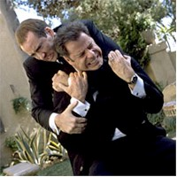

Contents | Features | Reviews | News | Archives | Store

Contents | Features | Reviews | News | Archives | Store
John Woo Revisited by KJ Doughton |
The early mentor of The Corruptor’s legendary star, Chow Yun Fat, is profiled
Posted 12 March 1999
Once in a great while, a film of such maniacal energy and go-for-broke attitude will squash conventionality and reinvent the rules of moviemaking. The segueway from black and white to color in The Wizard of Oz. The hallucinatory journey to Colonel Kurtz’s Satanic jungle domain in Apocalypse Now. The psychotic catharsis of Travis Bickle during the electric final scenes of Taxi Driver. The confused, caucaphanous prison riot unleashed in Natural Born Killers.
Movies with this much disturbing force and unbridled ambition are the exception and not the rule, perhaps because society can only absorb so much pioneering, maverick style before retreating back into the comfortable arms of convention. Most of us choose movies as a means to escape, to soothe – and to get caught into the web of A Clockwork Orange’s subhuman droogs or Saving Private Ryan’s brutal, grunt’s-eye D-Day Invasion can serve as an unwanted thrust off the deep end – beyond the troubles of day-by-day reality.
But this type of over-the-top moviemaking is, for many people, what makes it worthwhile to go to the theater: the cinematic icing on the cake. The lovingly remembered Chicago Tribune critic Gene Siskel often talked about the giddy energy and adrenaline-charged sense of discovery he experienced while viewing the final frames of Fargo, in which a pregnant chief of police, a harsh, winter snowscape, and a malevolent wood chipper all merged into a macabre triangle. The vision was original and unprecedented.
 Which brings us to
the celluloid offerings of Hong Kong-originated action auteur, John Woo. His better films,
including the Hong Kong gangster masterpieces he turned out from 1986 to 1992, are loaded
with such transcendent movie moments. Sardine-can crowded with sentimentality and
melodrama, juxtaposed with the sledgehammer slam of brutal, unprecedented carnage, his
movies are always alive with emotion and movement. It’s as if Woo reaches a stage in
his films where he lets his intuitive id take over, throwing all logic, restraint, and
subtlety to the wind: a hallucinatory quality results that is unlike anything ever put on
film. With Woo, more is always better.
Which brings us to
the celluloid offerings of Hong Kong-originated action auteur, John Woo. His better films,
including the Hong Kong gangster masterpieces he turned out from 1986 to 1992, are loaded
with such transcendent movie moments. Sardine-can crowded with sentimentality and
melodrama, juxtaposed with the sledgehammer slam of brutal, unprecedented carnage, his
movies are always alive with emotion and movement. It’s as if Woo reaches a stage in
his films where he lets his intuitive id take over, throwing all logic, restraint, and
subtlety to the wind: a hallucinatory quality results that is unlike anything ever put on
film. With Woo, more is always better.
Take, for instance, the defining scene from what is arguably his best Hong Kong-era film, Hard-Boiled. His onscreen alter-ego, Chow Yun Fat (Woo’s equivalent to Scorsese’s DeNiro, currently starring in the James Foley actioner, The Corruptor), is rescuing a newborn infant from a hospital maternity ward about to go up in flames. In loving slo-mo, Chow coaxes smiles and coos from the infant while mercilessly blowing away pursuers with a handgun. At one point, he shields the child’s eyes from the orgy of bullet-addled bodies, exclaiming, "Don’t look – X-rated action!" It’s this unlikely blend of innocence, humor, stylish camerawork, and kinetic violence that makes Woo’s movies as visionary as anything gracing the silver screen.
Born on September 23, 1946, in Canton, South China, John Woo spent his formative, preadolescent years in Hong Kong. In the book Asian Pop Cinema by Lee Server, Woo summarizes the experience of growing up in 60’s-era slums of China as that of "living in hell." Using the theater as a sanctuary from this unsavory environment, he initially sought out and cherished escapist musicals like Stanley Donen’s Singin’ in the Rain and Robert Wise’s West Side Story (the opening montage of A Bullet in the Head pays homage to the latter, with its naïve young street-fighters facing off in a graceful ballet of slo-mo skirmishing). Over time, Woo would gravitate to the French new wave, and to Welles, Peckinpah, Kubrick, Kurosawa, and Scorsese (all of whom make spiritual appearances in his homage-heavy latter films), before actually working behind the camera. Gaining employment first as an apprentice for Shaw Brothers’ staple director Chang Cheh, Woo eventually received his own director’s credit on such martial arts films as Young Dragons (his first, in 1973, which boasted the then-ubiquitous Jackie Chan as stunt director. The future stunt god would go on to star in Woo’s undistinguished 1975 film, Hand of Death).
The early John Woo resume is cluttered with second-string comedies and chop-socky actioners, all mere warm-ups for what would eventually become Woo’s trademark forte: the Hong Kong gangster film. He scripted 1986’s A Better Tomorrow, the story of two upwardly-mobile, counterfeiting mobsters and the web of bad luck that ensnares them both after one is imprisoned and the other debilitated. The concept was quickly picked up by producer/director icon Tsui Hark (the man behind the lens of Jet Li’s pre-Lethal Weapon 4, Once Upon A Time In China series, in which he portrayed legendary Wong Fei-hong). Under Hark’s financial backing, A Better Tomorrow was brought to life and began the John Woo legacy of ciggie-smoking, overcoat-bearing hipsters overcoming bulletfests and betrayals.
A Better Tomorrow (1986):While not the best of his gangster-era movies, A Better Tomorrow set the standard for what would eventually become the Woo style. Its key characters are two fraternal crooks, Ho (Ti Lung) and Mark (Chow Yun Fat). Like Lethal Weapon’s Murtaugh and Riggs, the two characters represent a tortured family man saddled with a daredevil risk-taker. Chow’s role would represent the latter, sexier identity, as Mark dons stylish overcoats (a Woo tradition most recently echoed in Face/Off, when Nicholas Cage’s diabolical villain Castor Troy emerges from a limo, black coattails twisting in the wind like a sinister vampire cape). Behind tinted shades, Mark also lights ciggies with counterfeit greenbacks, and shoots rival goodfellas with an elegance that suggests Fred Astaire cloned with Steve McQueen. Lung’s Ho is the more tentative, reluctant partner, whose betrayal at the hands of a slippery traitor results in his serving prison time.
Upon his release, Ho is shunned by his younger brother Kit (Leslie Cheung), a wannabe cop cutting his teeth at the police academy. Meanwhile, the once-suave hit man Mark is reduced to a rumpled beggar and yes-man for the very creep who betrayed Ho. His debilitation via slugs to kneecaps is brilliantly staged in a shootout involving handguns strategically planted in a row of decorative plantholders – the first of Woo’s many dizzying, unequalled bullet-thons.
 Following the pained theme of nearly all Woo’s work,
the movie suggests that struggle and sacrifice – usually including death or
dismemberment – are inevitable building blocks towards the triumph of good over evil.
A final showdown pits Ho, Mark, and Kit against the bullying triad gangsters:
inter-character schisms are resolved as bullets rip through flesh. All of this is played
out to the unfortunate beat of a lame, made-for-TV soundtrack. The unflattering coupling
of dated, brass muzak with plentiful bloodletting ultimately brings to mind a Starsky
and Hutch episode helmed by Sam Peckinpah. (its sequel, A Better Tomorrow II,
is far less memorable script-wise, but boasts a brutal final-reel bloodbath, in which
swords sever arms, grenades blow soundstages into dust, and bullets mow down dozens of
triad henchmen).
Following the pained theme of nearly all Woo’s work,
the movie suggests that struggle and sacrifice – usually including death or
dismemberment – are inevitable building blocks towards the triumph of good over evil.
A final showdown pits Ho, Mark, and Kit against the bullying triad gangsters:
inter-character schisms are resolved as bullets rip through flesh. All of this is played
out to the unfortunate beat of a lame, made-for-TV soundtrack. The unflattering coupling
of dated, brass muzak with plentiful bloodletting ultimately brings to mind a Starsky
and Hutch episode helmed by Sam Peckinpah. (its sequel, A Better Tomorrow II,
is far less memorable script-wise, but boasts a brutal final-reel bloodbath, in which
swords sever arms, grenades blow soundstages into dust, and bullets mow down dozens of
triad henchmen).
However, the suave overcoat ‘n shades cool of Chow Yun Fat would serve as a model for thousands of Chinese admirers. Server’s aforementioned book Asian Pop Cinema features Woo commenting on the absurdity of youthful Chow emulators bearing thick, black overcoats in the tropical Chinese climate, literally sweating up a storm to be hip.
The Killer (1989):In a 1996 Seattle film festival program, critic Sean Axmaker categorized The Killer as "the Woo chick flick". He’s right. There’s a pulpy romantic quality inherent in The Killer that is absent from his other work. However, male bonding and over-the-top gunplay also feature prominently in the saga of torch singer Jenny (Sally Yeh), who is accidentally blinded by hit man Jeff (Chow Yun Fat) during a fiery nightclub shootout. Guilt-ridden over the maiming, Jeff gradually builds a relationship with Jenny, who is unaware of her suitor’s true identity until much later in the film. Eventually, the ever-more world-weary assassin Jeff takes on "one last job" to finance a cornea transplant for Jenny. After the deed is done, however, his paranoid employer would rather kill him than pay him the money.
 Meanwhile, determined
cop Li (Danny Lee) tails him with all the dogged determination of Popeye Doyle pursuing
heroin smugglers in The French Connection. As in most Woo outings, there’s a
growing bond between hunter and hunted, as Jeff and Li discover that despite being on
opposite side of the law, they share many of the same ideals. Many U.S. critics might view
such relationships as homoerotic, but the passion stirred between such comrades seems
based more on mutual sacrifice through trying times, than on physical attraction. In fact,
Woo parodies this perception in a hilarious scene in which Li cauterizes a flesh wound
sustained by Jeff (using gunpowder ignited over the wound). After the painful procedure,
in which Chow’s agony-wrenched face contorts, orgasm-like, both men are shown in
relaxed mode, sharing a cigarette like two post-coitus bedmates.
Meanwhile, determined
cop Li (Danny Lee) tails him with all the dogged determination of Popeye Doyle pursuing
heroin smugglers in The French Connection. As in most Woo outings, there’s a
growing bond between hunter and hunted, as Jeff and Li discover that despite being on
opposite side of the law, they share many of the same ideals. Many U.S. critics might view
such relationships as homoerotic, but the passion stirred between such comrades seems
based more on mutual sacrifice through trying times, than on physical attraction. In fact,
Woo parodies this perception in a hilarious scene in which Li cauterizes a flesh wound
sustained by Jeff (using gunpowder ignited over the wound). After the painful procedure,
in which Chow’s agony-wrenched face contorts, orgasm-like, both men are shown in
relaxed mode, sharing a cigarette like two post-coitus bedmates.
Woo’s clever use of humor springs forth in other original forms, including a scene in which Li tracks Jeff to the home of Jenny. Both men, with guns pointed each other’s foreheads in Mexican standoff mode (a pose which would become another staple of all Woo films), put on a civil front so as not to alarm to blind Jenny, who is oblivious to their antagonistic relationship. "He’s an old football buddy", says Jeff of Li, as the unknowing Jenny sets out to prepare tea.
In a way, Woo’s heroes are like high-school athletes combining their resources to win the big state playoff game, then embracing after their well-earned gridiron victory. The only difference is that most won’t survive to see the game’s final score. Such is certainly the case in The Killer, where Li and Jeff cast aside their differences to cap several hundred mob assassins sent to wack them. Before the final showdown in a rural Catholic church, a disloyal confidante will redeem himself through retrieval of Jeff’s money, but only at the cost of torture and death. Meanwhile, in a bit of wicked poetic justice, Jeff is blinded during the final blazing showdown, which makes The Wild Bunch climax look lethargic by comparison. The perversely funny finale of The Killer concludes Duel in the Sun style, with sightless lovers Jeff ‘n Jenny crawling towards -and past - each other in the dust.
A Bullet in the Head (1990):In their 1996 book Sex and Zen & A Bullet in the Head, Stefan Hammond and Mike Wilkins correctly proclaim that, "No one who sees A Bullet in the Head can remain neutral: you either love it or you hate it." Inspired by the Tiananmen Square massacre of 1989, A Bullet in the Head follows the late-60’s exploits of three friends whose attempts to profiteer from the Vietnam War in Saigon lead to harrowing consequences. While critic Kenneth Turan once described HardBoiled’s cyclone of violence as "more whimsical than realistic", the stressful mayhem in A Bullet in the Head provides no respite. Stripped of the comic relief and satire that made the bloodletting in other Woo movies more bearable, this wartime drama is the director’s most disturbing and unshakeable film.
 When Hong Kong
street-gang buddies Ben (Tony Leung, who would later star as Chow Yun Fat’s symbiotic
soul-mate in Woo’s HardBoiled), Frank (Jackie Cheung), and Paul (Waise Lee)
accidentally kill the leader of a rival gang, the former’s wedding plans are
squelched while the trio hide from authorities. Plans are set to enter Saigon and sell a
suitcase of penicillin to a shady crime boss, Mr. Leong, while they lay low. But when the
boys learn that the would-be recipient of their goods has turned past acquaintance Sally
(Yolinda Yam) into a prostitute and drug addict, plans are altered. With the help of a
suave Eurasian ex-CIA operative named Luke (Simon Yam), the trio engage in a Travis
Bickle-style quest to rescue Sally from her captor.
When Hong Kong
street-gang buddies Ben (Tony Leung, who would later star as Chow Yun Fat’s symbiotic
soul-mate in Woo’s HardBoiled), Frank (Jackie Cheung), and Paul (Waise Lee)
accidentally kill the leader of a rival gang, the former’s wedding plans are
squelched while the trio hide from authorities. Plans are set to enter Saigon and sell a
suitcase of penicillin to a shady crime boss, Mr. Leong, while they lay low. But when the
boys learn that the would-be recipient of their goods has turned past acquaintance Sally
(Yolinda Yam) into a prostitute and drug addict, plans are altered. With the help of a
suave Eurasian ex-CIA operative named Luke (Simon Yam), the trio engage in a Travis
Bickle-style quest to rescue Sally from her captor.
At this point, the tone of the film becomes darker and more despairing. The innocent, West Side Story-inspired mood of the movie’s opening street brawls radiates carefree - if two-fisted - innocence, but latter passages are smothered in claustrophobic tension and invasive horror. The pivotal transformation that leads A Bullet in the Head down this progressively darker path is that of Paul from devoted buddy to ruthless profiteer. The son of an impoverished street sweeper who yearns for wealth, Paul abandons all semblance of morality when a case of gold pieces is unveiled during the knock down, drag out rescue sequence at Leong’s Bolero nightclub. While Luke, Ben, and Frank take pains to rescue Sally via a gun-filled piano and a handful of exploding cuban cigars, Paul obsesses over the case of riches, killing anyone who dares get in his way.
Things go from bad to worse when Sally is killed, and the film’s original trio is held captive by the Viet Cong in a riverside concentration camp. A nearly unbearable scene ensues, in which the baby-faced Frank is forced by sadistic Viet Cong to shoot fellow prisoners pointblank, or risk receiving a bullet to his own head. Echoing The Deer Hunter’s horrific Russian Roulette sequence, this hellish ordeal will drive Frank insane in much the same way Christopher Walken’s Nick was scarred for life in Michael Cimino’s 1978 epic. Ultimately, the trio are rescued by Luke, who endures facial scarring to accomplish this (which takes on larger proportions when one considers actor Yam’s strikingly handsome profile) in another example of good being achieved only at the expense of physical or psychological punishment in Woo’s films. During the tense rescue, the completely greed-consumed Paul finds himself hiding from Viet Cong pursuers with the fragile Frank. When Frank refuses to quiet down as their military adversaries close in, the bloodless Paul silences his one-time childhood friend with an unsympathetic bullet in the head. This action, which doesn’t end Frank’s life, but instead leaves him in a state of semi-insanity and chronic pain, forever severs the seemingly unbreakable bond that the three Hong Kong comrades had once shared.
Eventually, Paul returns to Hong Kong, gaining great monetary wealth and upwardly status via his gold cargo, at the expense of his soul. Ben, meanwhile, remains in Saigon to search for Frank, whom he finds living as a heroin-addicted transient, killing for money with which to enable his fix. Ben spares him any further pain by providing euthanasia via handgun: it’s one of many painful scenes to sit through as A Bullet in the Head’s spiraling doom continues. In the end, Paul meets his maker in a four-wheeled race to the death with Ben, the last of the three to emerge with sanity and soul intact. It’s a bleak finale to this harsh, unsparing movie, which Woo is quoted as saying ranks among his favorite self-directed films. After the emotional journey of A Bullet in the Head, Woo took a respite from violent drama to direct the light caper comedy Once a Thief (1991).
Hard-Boiled (1992):The kinetic action set pieces of Hard-Boiled are so tightly-wound, so intense, that they will either exhilarate or scare off action fans bred on the relatively lame offerings provided by major Hollywood studios. An all-American death-fest like James Cameron’s flag-waving True Lies, where Middle Eastern terrorists are cheerfully mutilated by familiar, Harrier Jet-helming action icons, is a slick piece of work that is sure to find favor with gung-ho cinemaphiles. In contrast, the sight of non-American stars sliding down bannisters, brandishing bilateral handguns, and shooting three times as fast as their yank counterparts might cause unease amongst this same action movie crowd. Throw in the unfamiliar settings and cultural rituals alien to the average Eastwood-loving midwesterner, and you’ve alienated those who lack adventure and who are addicted to the mundane.
This is not a criticism. Rather, it’s testimony to the fact that Hard-Boiled is several steps beyond the formula action filmmaking that routinely comes out of Hollywood. With the possible exception of George Miller’s The Road Warrior, this eye-popping masterpiece is the most visceral action movie ever made.
Hard-Boiled immediately bathes itself in noirish atmosphere as it establishes the maverick identity of Tequila (Chow Yun Fat), a cop by day and a jazz clarinet player by night. Blue smoke fills a jazzy nightclub where Tequila takes on musician mode, with devoted police-partner Lionheart (Bowie Lam) backing up his horn-playing on drums. The two are summoned to an area teahouse to investigate possible gunrunning. And within minutes of the opening frame, the scene is set for a shootout like no other. Like guard dogs barking at lurking burglars, sparrows inhabiting the teahouse’s many hanging birdcages flutter anxiously before Tequila and Lionheart are engaged in a furious ballistic ballet with an army of weapons-dealing thugs.
Hard-Boiled is not as plot-driven as Woo’s other classics: the camera is the main character this time out. Like the aforementioned The Road Warrior, which funnels its entire narrative down to a hyperintense, masterfully focused race between a Mel Gibson-helmed tanker and an army of mohawked nihilists, Hard-Boiled culminates in the takeover of a hospital by illegal arms dealers and the heroic, "fly in the ointment" presence of our heroes to save the day. The film has often been described as "Die Hard in a hospital", but Bruce Willis’ smirk doesn’t hold a candle to that of Chow Yun Fat’s rebel cop Tequila. The latter is so cool that he can slide down a stairway handrail with a gun in each hand, mowing people down left and right with a toothpick firmly clenched between his pearly whites. (An obvious homage to Dirty Harry Callahan, who could casually chew sandwiches while asking punks if they felt lucky staring down the barrel of his magnum).
Meanwhile, his intense partner Tony, a slick undercover cop played by Tony Leung, hangs out on his yacht making origami swans when he isn’t combining forces with Tequila to face off with villains Johnny and Mad Dog (the latter boasts the greatest hair since George Stephanopolous). When these ruthless gun smugglers take over the hospital’s maternity ward full of newborns, it’s up to the two cops to save the infant hostages. The final gurgling baby, affectionately dubbed "Saliva Sammy" by his rescuer Chow, coos happily as bodies are pelted with lead, glass, and shrapnel before he is safely jettisoned from a three story window in the capable arms of his elder. Both land safely, as flames, explosions, and flying rubble fill the frame around them.
During a 1996 film festival spotlighting his work, Woo commented that many of the action scenes featured in HardBoiled were done "when I was in a crazed state". He described a scene in which Chow cradles Saliva Sammy in his arms while running like a bat out of hell down a hospital corridor, with explosions timed to go off behind him in a chronological pattern. There would be no second chance if Chow didn’t run this tightly choreographed gauntlet at just the right speed. "Had he slowed down," admits Woo, "I don’t want to think what might have happened." There are equally insane set-pieces filmed on a yacht and in an auto manufacturing warehouse. Watching these intricately-assembled action scenes, one is found in a morally challenging dilemma: the violence is extreme, but it’s also hypnotic and beautiful, with bodies moving about like graceful dancers and explosions lighting up the periphery like fireworks. The verdict is in: John Woo shoots gorgeous violence.
It was merely a matter of time before John Woo was drafted by Hollywood to incorporate his trademark gonzo style and themes into American actioners. However, it took three films before he hit his stride in the U.S. Why? Perhaps it was due to America’s unwillingness to give him free rein over his projects, or the rather generic scripts handed him the first two times at bat, or his own unease working in the Hollywood studio system. Whatever the reason, the trademark brisk energy and vivid characterizations of the Woo Hong Kong movies was absent from his debut U.S.film, 1993’s Hard Target, and its follow-up, 1995’s Broken Arrow. The former took the tired man-hunts-man plot of The Most Dangerous Game and fused in onto a Jean Claude Van Damme vanity project. The "muscles from Brussels" failed to project the multidimensional personality of a Chow Yun Fat or a Simon Yam, preferring bicep-flexing and rump-shaking in rapid-cut, MTV style stunt sequences (which are, truth to tell, pretty good, especially in the lengthy director’s cut). Despite claiming the number one box-office slot upon its release, Broken Arrow suffered from the uninspired casting of wormy Christian Slater and generic Samantha Mathis. The two proved to be drab heroes in pursuit of warhead-filching (and scene-stealing) psychopath John Travolta (who had a chance to warm up for his brilliant, dual-role Woo follow-up in Face/Off). Meanwhile, Woo dabbled in television, directing the pilot episode of the Canadian-produced Fox series Once a Thief in 1996, before being handed a script worthy of his directorial talents.
Face/Off (1997):Considering Face/Off’s violent energy, deranged humor, and strangely symbiotic relationship between its two main characters, it’s amazing that Woo didn’t script the story himself. It takes an outrageous premise and makes it poignant, disturbing, and believable, due to the strength of its performances and the psychological depth of its screenplay (by Mike Werb and Michael Colleary).
Face/Off introduces FBI agent Sean Archer (John Travolta) as a spiritless burnout still reeling from the death of his young son in his arms, at the hands of psychotic terrorist Castor Troy (Nicholas Cage). The introductory segment, in which the murder is performed on a carnival carousel, incorporates slow motion, faded pastel colors, and a soft, hazy focus to conjure forth an idealized dreamscape turned nightmare with the pull of a trigger. As Troy realizes from a nearby hilltop that he’s missed his intended target, Archer, and killed his defenseless son instead, there’s a look of quizzical, near-remorse on his face. Throughout the movie, Cage punctuates his performance with these nuances, and succeeds in making an utterly impulsive, opportunistic, egomaniacal killer seem almost human.
Well, almost. When he’s not picking children off bigtop rides with his considerable arsenal of firearms, he’s planting bombs in central Los Angeles and fondling choir girls ("You make even a hack like Handel sound great", he tells a young blonde chorus member before gleefully grasping her buttocks). Troy’s lust for life extends as far as sex, money and guns, but his spirits are quickly dampened by the merest setback. During a wild chase at LAX, Troy wastes both a stewardess he’d been seducing moments earlier, and his plane’s pilot ("Fly, bitch!" he commands impatiently) when Archer closes in for the kill. Soon afterwards, when the vengeance-seeking Archer has a gun to Troy’s head, his cornered prey breaks out in song. "I’m ready for the big ride, baby," he croons, before getting sucked into a wind tunnel, ramming a steel grillwork, and slipping into a coma.
With Troy presumed to be permanently out of commission, Archer reports the news to his relieved doctor wife Eve (Joan Allen) and goth-garbed teen daughter Jamie (Dominique Swain). But he’s still incapable of celebration. At work, he silences the congratulatory cheers of his fellow agents. When Washington sends champagne, the dour Archer is unimpressed. "I didn’t know they catered", he grumbles. His mood deteriorates further upon news that there’s a bomb set to blow up a chunk of L.A., and only Troy and his equally dangerous geek brother know of its whereabouts. When efforts to interrogate the latter are met with failure, Special Operations agents suggest an alternative plan.
"I know who you are", exclaims Archer when he’s introduced to state-of-the-art surgeon Malcolm Walsh (Colm Feore). "Yes", says Walsh, "but you don’t know what I can do". In an up-to-date spin on the "we can rebuild him" sci-fi concept of The Six Million Dollar Man, Walsh demonstrates his power to graft the face of one man onto the body of another. Soon, Archer is putting all the pieces together as he learns that Troy has been kept alive in a vegetable state and is ripe for de-facing. As the recipient, Archer could pose as Troy, meet with his brother in prison, extract information of the bomb-planting site, and reclaim his previous mug. "The process is completely reversible," assures Walsh.
So far, so good. Unfortunately, the supposedly comatose Troy awakens from his slumber in a chilling, if unlikely, sequence. Bringing a hand to his skinless chin, he whimpers in shrill panic before noticing his arch-rival’s mug preserved in the next room. After having accomplices kidnap Walsh and force the surgeon to graft Archer’s face onto his own exposed skull ‘n muscle head, Troy kills all that are aware of the covert, low-key project, takes on the agent’s identity and claims the career and family of his nemesis. Meanwhile, Archer spends his days rotting in prison, mindful of the all-too-disturbing reality that his son’s assassin is now sleeping with his wife and parenting his impressionable teen daughter.
Fortunately, Woo recognizes not only the horrific but also the comic possibilities of this premise. Travolta gives a borderline brilliant impersonation of Cage, with his erratic vocal deliveries and manic enthusiasm. He cooks candlelight dinner for the attention-hungry Eve, and teaches his would-be daughter how to fend off horny boyfriends with a switchblade ("stab ‘em in the thigh, then turn the blade so the wound stays open", he instructs helpfully). Archer’s transformation from depressed sourpuss to revitalized life of the party is fun for awhile ("Boss, who removed the stick from your ass?" jokes a fellow FBI agent). But when he begins doing his law enforcement job too well by sniffing out and leading the FBI into the dens of his adversaries, suspicions are raised. "I don’t know where you get your information", says a puzzled FBI superior.
After surviving a rabble-rousing, hyperviolent jailbreak, Archer’s first priority is to win the trust of his wife, despite the surgical makeover. This he does, through an emotionally sincere and meticulously detailed account of their first date after breaking into his once-welcome home. Meanwhile, Allen grounds the films from spinning out of control: she’s the audience’s identification point on this wild ride. After taking a discreet blood sample from her impostor husband and comfirming the switch at the hospital, Eve plots with her appearance-altered hubby to make things right. Meanwhile, with his new underworld-friendly face intact, Archer find himself given easy access to both the lair of Troy’s girlfriend (Gina Gershon) and her affections. Meanwhile, the discovery that Troy has a son of his own rekindles within Archer the memories of his own parental loss.
At this point, Face/Off goes cheerfully over-the-top. There’s a church shootout which seems lifted from The Killer, with its candles, white doves and crucifixes contrasting wildly against the bullets ‘n bloodshed. There’s the Mexican standoff to end all Mexican standoffs, in which nearly every character has a gun to someone else’s temples ("What a predicament," cackles the Archer-camouflaged Troy, who enjoys such adrenaline-inducing situations, even when his own life is threatened). To one-up this cleverly staged bit of mayhem, Woo outdoes himself with a boat chase that ends with Archer harpooning the demonic Troy to a dock house. This time, it appears that the resigned Troy really is "ready for the big ride."
Face/Off’s final scene, awash in the same dull pastels and off-focus imagery that marked its initial frames, has an emotional resonance that is uncommon for a contemporary action blockbuster. Compare it to the rather manipulative and broadly-drawn scripts of such Jerry Bruckheimer thrill rides such as Con Air and The Rock (both, ironically, starring Cage in far less memorable performances). Face/Off, in contrast, is the one in-your-face actioner whose characters and predicaments stay with you long after you’ve left the theater.
Following his success at finally mastering the Hollywood action game with Face/Off, John Woo has continued to expand his horizons. A return to television work was realized with the pilot episode of 1998’s Blackjack series (directed by Woo and starring Dolph Lundgren), while his more recent work as producer has included 1998’s The Big Hit with Mark Wahlberg and The Replacement Killers with his old Hong Kong mainstay Chow Yun Fat. Currently, the busy director stands at the helm of Mission Impossible II with Tom Cruise, and is scheduled to reteam with star Chow Yun Fat on soon-to-be-produced heist film King’s Ransom. Let’s hope that Woo continues to use – and not be used by - Hollywood to realize his unique cinematic vision, while maintaining the same original energy and impassioned characters that infused his earlier Hong Kong work with such unmatched spark and personality.
*Footnote: the above is not intended to be a complete history of John Woo’s entire body of work. For more detailed trivia, including a complete filmography, I recommend Jeff "Koganuts" Koga’s "A Bullet in the Web" site (http//www.johnwoo.com). Meanwhile, I would like to express my appreciation and thanks to Jeff for providing the URL’s which illustrate this overview.
Contents | Features | Reviews | News | Archives | Store
Copyright © 1999 by Nitrate Productions, Inc. All Rights Reserved.